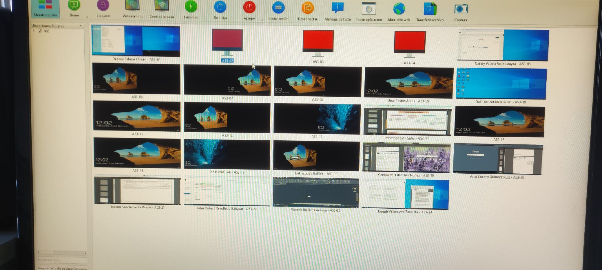

Experencia Laboral
Instituto Provençana
[16/09/204] - [21/02/2025]

Durante mis prácticas profesionales, adquirí experiencia en la instalación, configuración y mantenimiento de sistemas informáticos. Participé en la resolución de incidencias técnicas y en tareas de administración de redes. Además, fortalecí mis habilidades para el trabajo en equipo, la adaptación a nuevas tecnologías.
Durante mis prácticas, trabajé en la instalación y mantenimiento de software, incluyendo configuraciones específicas en distintos sistemas operativos. También realicé tareas de montaje, desmontaje y diagnóstico de hardware en ordenadores de sobremesa y portátiles.


